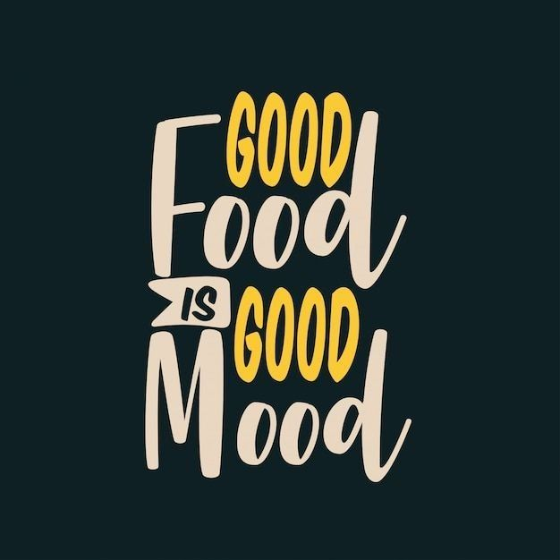

About CTR RESTURANT
Waxaan bilownay safarkaan si aan idiin siino cunto tayo sare leh, jawi qurux badan, iyo adeeg aan la halmaamin karin.

Who We Are
Waxaan Ku Kalsoonahay Tayada
Ilaa 2015, CTR RESTURANT wuxuu ahaa meel lagu sameeyo cunto Soomaali ah oo lagu daray farsamada casriga ah ee cunto karinta. Shefyadeena waxay isticmaalaan walxaha ugu dambeeya ee tayada sare leh.
Ujeedadeena waa in aan idin siino khibrad cunto oo dhab ah, halkaas oo qof walba uu dareemo sida qoyska.
10+
Sano Khibrad
50+
Cunto Nooc
5k+
Macmiil Faraxsan
Tayada Sare
Walaxda ugu fiican oo dhaqan ah ayaan isticmaalnaa maalin walba.
Adeeg Degdeg ah
Kooxdeena waxay siisaa adeeg deg deg ah oo shaqsi ah.
Jawi Qurux Badan
Meel ku habboon casho, shirar, iyo dabaaldeg walba.